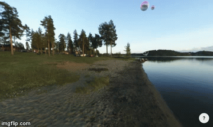
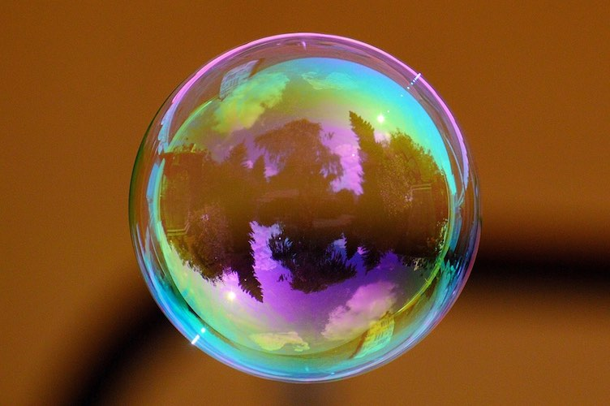
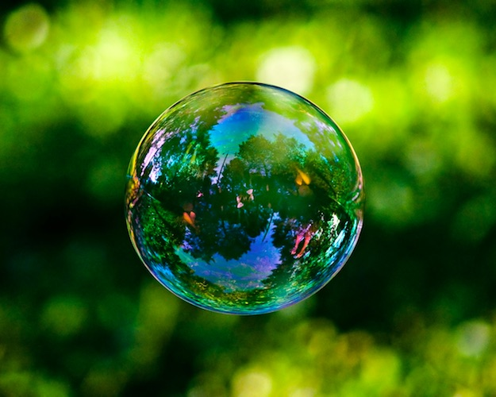
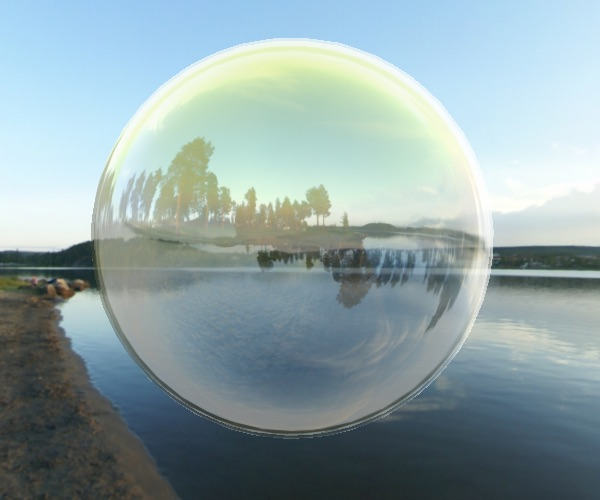
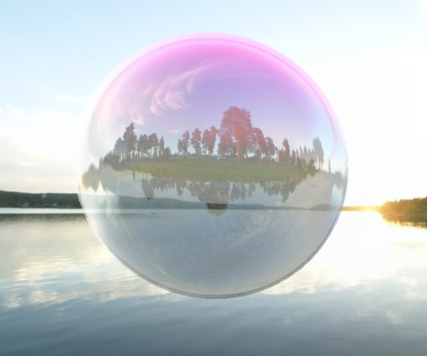

Interactive Bubbles Simulation
Joe Ng Jie Rong, Soo Ming Jin, Teo Si-Yan
Click here to view implementation
Overview
We find soap bubbles fascinating, with their myriad colours and how they seem to fly around randomly. While playing with bubbles is fun, simulating the physics of bubbles is not so fun. Hence, we choose to create a non-physical ("hacky") simulation of bubbles that looks reasonably realistic, can handle over 100 bubbles in real time, and is interactive for the user to play with.
A custom shader was written for the bubble’s internal surface and external surface. The popping was simulated by recursively popping the neighbouring faces. In addition, the particles that seem to fly out as the bubble is popped would be simulated by having a vertex mesh that would move when the faces are popped.
Components
Particle System
A particle system was used to simulate how bubbles produce small soap particles when popped. The particles were modelled using a separate vertex mesh that follows the vertex mesh of the soap bubble film.
When clicked, the bubble faces pop recursively. At every step, when a face of the bubble is removed, the vertices of the particles at that face would be sent flying out.
Shader
We wrote a custom shader in GLSL to render the bubbles’ reflection and dispersion. To achieve the double-reflection, we used 2 meshes for each bubble (one for the outside reflection and one for the reflection off the inside of the bubble), and set the background cube map as environment maps for the shader.
The colourful appearance of bubbles happens because of different wavelengths of light interfering constructively at different film thicknesses. However, we were unable to model this and simply “hacked” it by randomly picking a 2-colour combination for each bubble.
Real photos of bubbles: 
Screenshots from our rendering:
 
Interaction
The user can explore the simulation and have fun playing with our virtual bubbles in the following ways:
- pop bubbles by clicking on them
- blow more bubbles by pressing spacebar
- change the wind direction or disable wind
- pause bubble movement and enter "observation mode"
A project for SUTD's 50.017 Graphics and Visualization course